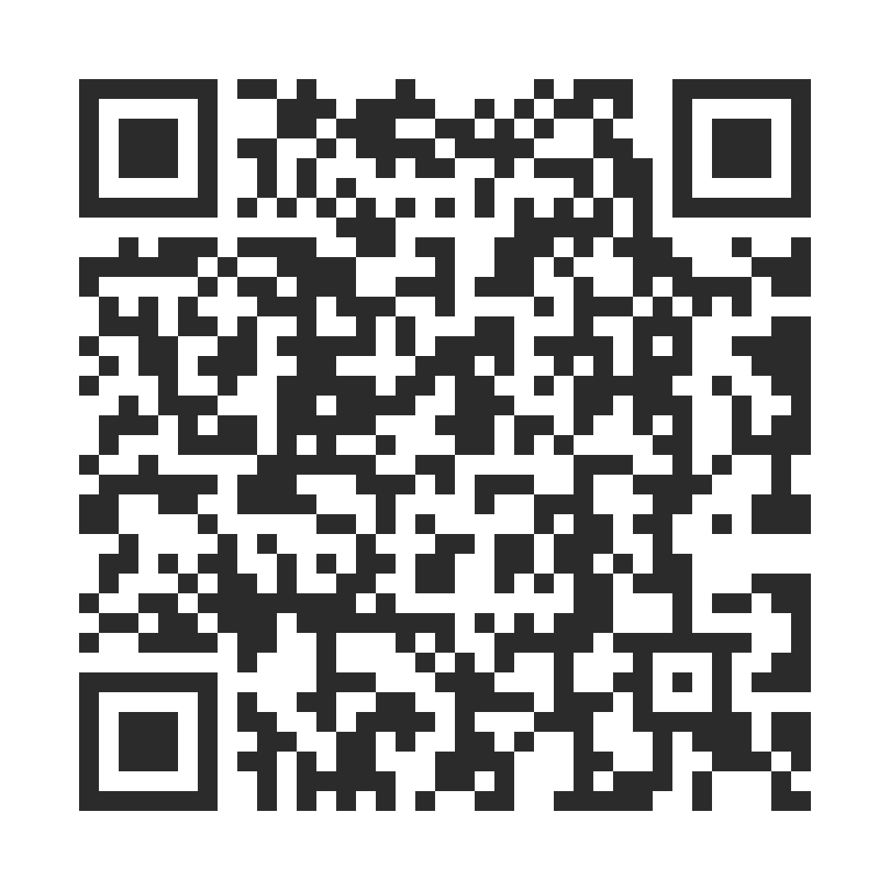

TalkPics convierte fotos reales de la vida de tu hijo en un tablero simple que habla por él. Toca una foto, se agranda y el dispositivo dice la palabra en voz alta. Grande, calmado y hecho para personas autistas no verbales. TalkPics turns real photos from your child's life into a simple board that speaks for them. Tap a photo, it grows large and the device says the word out loud. Big, calm, and built for non-speaking autistic people. TalkPics converteix fotos reals de la vida del teu fill o filla en un tauler senzill que parla per ell. Toca una foto, s'amplia i el dispositiu diu la paraula en veu alta. Gran, calmat i fet per a persones autistes no verbals.TalkPics transforme de vraies photos de la vie de votre enfant en un tableau simple qui parle pour lui. Touchez une photo : elle s'agrandit et l'appareil dit le mot à voix haute. Grand, calme et pensé pour les personnes autistes non verbales.TalkPics trasforma foto reali della vita di tuo figlio in una tavola semplice che parla per lui. Tocchi una foto: si ingrandisce e il dispositivo dice la parola ad alta voce. Grande, calma e pensata per persone autistiche non verbali.O TalkPics transforma fotos reais da vida do seu filho em um painel simples que fala por ele. Toque em uma foto: ela aumenta e o aparelho diz a palavra em voz alta. Grande, calmo e feito para pessoas autistas não verbais.TalkPics macht aus echten Fotos aus dem Leben deines Kindes eine einfache Tafel, die für es spricht. Tippe ein Foto an: Es wird groß und das Gerät sagt das Wort laut. Groß, ruhig und gemacht für nicht sprechende autistische Menschen.TalkPics pārvērš īstas fotogrāfijas no jūsu bērna dzīves vienkāršā tāfelē, kas runā viņa vietā. Pieskarieties fotogrāfijai: tā palielinās, un ierīce skaļi pasaka vārdu. Liela, mierīga un radīta nerunājošiem autiskiem cilvēkiem.TalkPics перетворює справжні фото з життя вашої дитини на просту дошку, яка говорить за неї. Торкніться фото: воно збільшується, а пристрій промовляє слово вголос. Велике, спокійне й створене для людей з аутизмом, які не говорять.TalkPics превращает настоящие фото из жизни вашего ребёнка в простую доску, которая говорит за него. Нажмите на фото: оно увеличивается, а устройство произносит слово вслух. Крупно, спокойно и сделано для неговорящих людей с аутизмом.
◉ Funciona sin internet · ◉ Sin anuncios · ◉ Las fotos nunca salen del dispositivo ◉ Works offline · ◉ No ads · ◉ Photos never leave the device ◉ Funciona sense internet · ◉ Sense anuncis · ◉ Les fotos mai surten del dispositiu◉ Fonctionne sans internet · ◉ Sans publicité · ◉ Les photos ne quittent jamais l'appareil◉ Funziona senza internet · ◉ Senza pubblicità · ◉ Le foto non lasciano mai il dispositivo◉ Funciona sem internet · ◉ Sem anúncios · ◉ As fotos nunca saem do aparelho◉ Funktioniert ohne Internet · ◉ Keine Werbung · ◉ Fotos verlassen nie das Gerät◉ Darbojas bez interneta · ◉ Bez reklāmām · ◉ Fotogrāfijas nekad nepamet ierīci◉ Працює без інтернету · ◉ Без реклами · ◉ Фото ніколи не залишають пристрій◉ Работает без интернета · ◉ Без рекламы · ◉ Фото никогда не покидают устройство
Cuando un niño no puede pedir agua, un abrazo o decir que algo le duele, la frustración crece para toda la familia. When a child can't ask for water, a hug, or say that something hurts, frustration grows for the whole family. Quan un infant no pot demanar aigua, una abraçada o dir que alguna cosa li fa mal, la frustració creix per a tota la família.Quand un enfant ne peut pas demander de l'eau, un câlin ou dire que quelque chose lui fait mal, la frustration grandit pour toute la famille.Quando un bambino non può chiedere acqua, un abbraccio o dire che qualcosa gli fa male, la frustrazione cresce per tutta la famiglia.Quando uma criança não consegue pedir água, um abraço ou dizer que algo está doendo, a frustração cresce para toda a família.Wenn ein Kind nicht um Wasser oder eine Umarmung bitten oder sagen kann, dass etwas wehtut, wächst der Frust für die ganze Familie.Kad bērns nevar palūgt ūdeni, apskāvienu vai pateikt, ka kaut kas sāp, vilšanās aug visai ģimenei.Коли дитина не може попросити води, обійми чи сказати, що щось болить, роздратування зростає в усієї родини.Когда ребёнок не может попросить воды, обнять или сказать, что что-то болит, раздражение растёт у всей семьи.
Basada en lo que publican logopedas y organizaciones de autismo, alrededor de un principio: la foto real de tu hijo comunica más rápido que cualquier símbolo.Based on what speech therapists and autism organisations publish, around one principle: your child's real photo communicates faster than any symbol.Basada en el que publiquen logopedes i organitzacions d'autisme, al voltant d'un principi: la foto real del teu fill o filla comunica més ràpid que qualsevol símbol.Basée sur ce que publient orthophonistes et associations d'autisme, autour d'un principe : la vraie photo de votre enfant communique plus vite que n'importe quel symbole.Basata su ciò che pubblicano logopedisti e associazioni sull'autismo, attorno a un principio: la foto reale di tuo figlio comunica più in fretta di qualsiasi simbolo.Baseado no que fonoaudiólogos e organizações de autismo publicam, em torno de um princípio: a foto real do seu filho comunica mais rápido do que qualquer símbolo.Aufgebaut auf dem, was Logopädinnen und Autismus-Organisationen veröffentlichen, rund um ein Prinzip: Das echte Foto deines Kindes kommuniziert schneller als jedes Symbol.Balstīta uz to, ko publicē logopēdi un autisma organizācijas, ap vienu principu: jūsu bērna īsta fotogrāfija sazinās ātrāk nekā jebkurš simbols.Створено на основі того, що публікують логопеди й організації з аутизму, довкола одного принципу: справжнє фото вашої дитини передає думку швидше за будь-який символ.Создано на основе того, что публикуют логопеды и организации по аутизму, вокруг одного принципа: настоящее фото вашего ребёнка передаёт мысль быстрее любого символа.
Haz una foto o súbela desde la galería. La taza azul de casa, no un dibujo cualquiera.Snap a photo or upload from the gallery. The blue cup from home, not a generic drawing.Fes una foto o puja-la des de la galeria. La tassa blava de casa, no un dibuix qualsevol.Prenez une photo ou importez-la depuis la galerie. La tasse bleue de la maison, pas un dessin générique.Scatta una foto o caricala dalla galleria. La tazza blu di casa, non un disegno generico.Tire uma foto ou envie da galeria. O copo azul de casa, não um desenho genérico.Mach ein Foto oder lade eins aus der Galerie. Die blaue Tasse von zu Hause, keine allgemeine Zeichnung.Uzņemiet foto vai augšupielādējiet no galerijas. Zilā krūze no mājām, nevis vispārīgs zīmējums.Зробіть фото або завантажте з галереї. Синя чашка з дому, а не загальний малюнок.Сделайте фото или загрузите из галереи. Синяя чашка из дома, а не обычный рисунок.
Al tocar, dice la palabra. Puedes grabar tu propia voz: la que el niño reconoce.On tap, it says the word. You can record your own voice — the one the child knows.En tocar, diu la paraula. Pots gravar la teva pròpia veu: la que l'infant reconeix.Au toucher, elle dit le mot. Vous pouvez enregistrer votre propre voix, celle que l'enfant connaît.Al tocco dice la parola. Puoi registrare la tua voce, quella che il bambino conosce.Ao tocar, diz a palavra. Você pode gravar sua própria voz, aquela que a criança conhece.Beim Antippen sagt sie das Wort. Du kannst deine eigene Stimme aufnehmen, die das Kind kennt.Pieskaroties tā pasaka vārdu. Varat ierakstīt savu balsi, kuru bērns pazīst.Після дотику промовляє слово. Можна записати власний голос, який дитина знає.При нажатии произносит слово. Можно записать свой голос, который ребёнок знает.
La foto elegida crece hasta llenar la pantalla para que todos la vean con claridad.The chosen photo grows to fill the screen so everyone sees it clearly.La foto triada creix fins a omplir la pantalla perquè tothom la vegi amb claredat.La photo choisie s'agrandit en plein écran pour que tout le monde la voie bien.La foto scelta si ingrandisce a tutto schermo perché tutti la vedano bene.A foto escolhida ocupa a tela inteira para que todos a vejam bem.Das gewählte Foto wird bildschirmfüllend groß, damit alle es gut sehen.Izvēlētā fotogrāfija aizpilda ekrānu, lai visi to labi redzētu.Вибране фото розгортається на весь екран, щоб усі його добре бачили.Выбранное фото раскрывается на весь экран, чтобы всем было хорошо видно.
Comida, personas, lugares, emociones. Ordena, etiqueta y marca favoritos a tu manera.Food, people, places, feelings. Sort, tag and star favorites your way.Menjar, persones, llocs, emocions. Ordena, etiqueta i marca preferits a la teva manera.Nourriture, personnes, lieux, émotions. Triez, étiquetez et marquez vos favoris à votre façon.Cibo, persone, luoghi, emozioni. Ordina, etichetta e segna i preferiti come vuoi.Comida, pessoas, lugares, emoções. Ordene, marque com etiquetas e escolha favoritos do seu jeito.Essen, Personen, Orte, Gefühle. Sortiere, verschlagworte und markiere Favoriten nach deiner Art.Ēdiens, cilvēki, vietas, emocijas. Kārtojiet, pievienojiet birkas un atzīmējiet izlasi pēc saviem ieskatiem.Їжа, люди, місця, емоції. Сортуйте, додавайте мітки й позначайте улюблене на свій лад.Еда, люди, места, эмоции. Сортируйте, добавляйте метки и отмечайте избранное по-своему.
Menos tarjetas, más grandes, sin botones de edición. El niño no puede borrar ni salir por error.Fewer, larger cards, no edit buttons. The child can't delete or exit by accident.Menys targetes, més grans, sense botons d'edició. L'infant no pot esborrar ni sortir per error.Moins de cartes, plus grandes, sans boutons de modification. L'enfant ne peut rien supprimer ni quitter par erreur.Meno schede, più grandi, senza pulsanti di modifica. Il bambino non può cancellare né uscire per sbaglio.Menos cartões, maiores, sem botões de edição. A criança não consegue apagar nem sair sem querer.Weniger, größere Karten, keine Bearbeitungsknöpfe. Das Kind kann nichts aus Versehen löschen oder verlassen.Mazāk kartīšu, lielākas, bez rediģēšanas pogām. Bērns nevar nejauši neko izdzēst vai iziet.Менше карток, більші, без кнопок редагування. Дитина не може випадково щось видалити чи вийти.Меньше карточек, крупнее, без кнопок редактирования. Ребёнок не может случайно что-то удалить или выйти.
Encadena tarjetas para construir frases: "Quiero" + "agua". Actívala solo cuando esté listo.Chain cards to build phrases: "I want" + "water". Turn it on only when ready.Encadena targetes per construir frases: «Vull» + «aigua». Activa-la només quan estigui a punt.Enchaînez des cartes pour faire des phrases : « Je veux » + « eau ». Activez-la seulement quand l'enfant est prêt.Collega le schede per formare frasi: “Voglio” + “acqua”. Attivala solo quando è pronto.Junte cartões para formar frases: “Eu quero” + “água”. Ative só quando a criança estiver pronta.Karten aneinanderreihen, um Sätze zu bilden: „Ich will“ + „Wasser“. Erst einschalten, wenn das Kind so weit ist.Savienojiet kartītes, lai veidotu frāzes: „Es gribu” + „ūdens”. Ieslēdziet to tikai tad, kad bērns ir gatavs.Поєднуйте картки, щоб складати фрази: «Я хочу» + «вода». Вмикайте лише тоді, коли дитина готова.Соединяйте карточки, чтобы составлять фразы: «Я хочу» + «вода». Включайте, только когда ребёнок готов.
El cuidador toma o sube fotos de las cosas, personas y lugares del día a día del niño y les pone nombre.The caregiver takes or uploads photos of the child's everyday things, people and places, and names them.El cuidador fa o puja fotos de les coses, persones i llocs del dia a dia de l'infant i els posa nom.L'adulte prend ou importe des photos des objets, des personnes et des lieux du quotidien de l'enfant, et leur donne un nom.Chi si prende cura del bambino scatta o carica foto di oggetti, persone e luoghi della sua giornata e dà loro un nome.Quem cuida tira ou envia fotos das coisas, pessoas e lugares do dia a dia da criança e dá um nome a elas.Die Bezugsperson fotografiert oder lädt Fotos von Dingen, Menschen und Orten aus dem Alltag des Kindes hoch und benennt sie.Aprūpētājs uzņem vai augšupielādē fotogrāfijas ar bērna ikdienas lietām, cilvēkiem un vietām un dod tām nosaukumus.Дорослий фотографує або завантажує фото речей, людей і місць із повсякдення дитини та дає їм назви.Взрослый снимает или загружает фото вещей, людей и мест из повседневной жизни ребёнка и даёт им названия.
Un gesto seguro deja la app en una vista simple donde nada se puede romper ni borrar.A safe gesture leaves the app in a simple view where nothing can break or be deleted.Un gest segur deixa l'app en una vista simple on res no es pot trencar ni esborrar.Un geste sûr laisse l'application dans une vue simple où rien ne peut être cassé ni supprimé.Un gesto sicuro lascia l'app in una vista semplice dove niente si può rompere o cancellare.Um gesto seguro deixa o app em uma tela simples onde nada pode ser estragado ou apagado.Eine sichere Geste lässt die App in einer einfachen Ansicht, in der nichts kaputtgehen oder gelöscht werden kann.Drošs žests atstāj lietotni vienkāršā skatā, kur neko nevar sabojāt vai izdzēst.Безпечний жест залишає застосунок у простому вигляді, де нічого не можна зламати чи видалити.Безопасный жест оставляет приложение в простом виде, где ничего нельзя сломать или удалить.
Toca la foto que quiere, se agranda y suena la palabra. Uno o dos toques, sin esperas.They tap the photo they want, it grows and the word plays. One or two taps, no waiting.Toca la foto que vol, s'amplia i sona la paraula. Un o dos tocs, sense esperes.Il touche la photo qu'il veut, elle s'agrandit et le mot est prononcé. Un ou deux touchers, sans attente.Tocca la foto che vuole, questa si ingrandisce e si sente la parola. Uno o due tocchi, senza attese.Ela toca na foto que quer, a foto aumenta e a palavra soa. Um ou dois toques, sem esperar.Es tippt das gewünschte Foto an, das Foto wird groß und das Wort erklingt. Ein oder zwei Tipper, ohne Warten.Viņš pieskaras vajadzīgajai fotogrāfijai, tā palielinās un skan vārds. Viens vai divi pieskārieni, bez gaidīšanas.Вона торкається потрібного фото, воно збільшується, і звучить слово. Один-два дотики, без очікування.Он нажимает на нужное фото, оно увеличивается, и звучит слово. Одно-два нажатия, без ожидания.
Sin tienda de apps, sin cuentas y sin descargas pesadas. Una vez instalada, funciona sin internet.No app store, no accounts, no big downloads. Once installed, it works offline.Sense botiga d'apps, sense comptes i sense descàrregues pesades. Un cop instal·lada, funciona sense internet.Pas de boutique d'applications, pas de compte, pas de gros téléchargement. Une fois installée, elle fonctionne hors ligne.Niente store, niente account, niente download pesanti. Una volta installata funziona offline.Sem loja de apps, sem contas, sem downloads pesados. Depois de instalado, funciona sem internet.Kein App-Store, kein Konto, keine großen Downloads. Einmal installiert, funktioniert sie offline.Bez lietotņu veikala, bez kontiem, bez lielām lejupielādēm. Pēc instalēšanas darbojas bez interneta.Без магазину застосунків, без облікових записів, без великих завантажень. Після встановлення працює офлайн.Без магазина приложений, без учётных записей, без больших загрузок. После установки работает офлайн.

Escanéalo con la cámara del móvil o la tabletScan it with your phone or tablet cameraEscaneja'l amb la càmera del mòbil o la tauletaScannez-le avec l'appareil photo du téléphone ou de la tabletteInquadralo con la fotocamera del telefono o del tabletEscaneie com a câmera do celular ou do tabletScanne ihn mit der Kamera von Handy oder TabletNoskenējiet to ar telefona vai planšetes kameruВідскануйте камерою телефона чи планшетаОтсканируйте камерой телефона или планшета
Importante en iPhone y iPad: el navegador y el icono de inicio guardan los datos por separado. Instala primero el icono y añade las fotos desde la app instalada.Important on iPhone and iPad: the browser and the home-screen icon store data separately. Install the icon first and add photos from the installed app.Important a iPhone i iPad: el navegador i la icona d'inici guarden les dades per separat. Instal·la primer la icona i afegeix les fotos des de l'app instal·lada.Important sur iPhone et iPad : le navigateur et l'icône de l'écran d'accueil gardent leurs données séparément. Installez d'abord l'icône et ajoutez les photos depuis l'application installée.Importante su iPhone e iPad: il browser e l'icona della schermata Home salvano i dati separatamente. Installa prima l'icona e aggiungi le foto dall'app installata.Importante no iPhone e no iPad: o navegador e o ícone da tela de início guardam os dados separadamente. Instale primeiro o ícone e adicione as fotos pelo app instalado.Wichtig auf iPhone und iPad: Browser und Home-Bildschirm-Symbol speichern ihre Daten getrennt. Installiere zuerst das Symbol und füge die Fotos in der installierten App hinzu.Svarīgi iPhone un iPad lietotājiem: pārlūks un sākuma ekrāna ikona glabā datus atsevišķi. Vispirms instalējiet ikonu un pievienojiet fotogrāfijas instalētajā lietotnē.Важливо на iPhone та iPad: браузер та іконка на початковому екрані зберігають дані окремо. Спершу встановіть іконку й додавайте фото у встановленому застосунку.Важно на iPhone и iPad: браузер и иконка на экране «Домой» хранят данные отдельно. Сначала установите иконку и добавляйте фото в установленном приложении.
Tus fotos y voces se guardan solo en ese dispositivo. Para pasarlas a otro móvil o a un terapeuta, usa la opción de exportar copia de seguridad dentro de la app.Your photos and voices are stored only on that device. To move them to another phone or to a therapist, use the export backup option inside the app.Les teves fotos i veus es guarden només en aquest dispositiu. Per passar-les a un altre mòbil o a un terapeuta, fes servir l'opció d'exportar còpia de seguretat dins de l'app.Vos photos et vos voix restent uniquement sur cet appareil. Pour les passer sur un autre téléphone ou à un thérapeute, utilisez l'option d'exportation de l'application.Le tue foto e le tue voci restano solo su quel dispositivo. Per passarle a un altro telefono o a un terapista, usa l'opzione di esportazione dentro l'app.Suas fotos e vozes ficam salvas só naquele aparelho. Para passá-las para outro celular ou para um terapeuta, use a opção de exportar dentro do app.Deine Fotos und Stimmen bleiben nur auf diesem Gerät. Um sie auf ein anderes Handy oder zur Therapeutin zu bringen, nutze die Export-Funktion in der App.Jūsu fotogrāfijas un balsis tiek glabātas tikai šajā ierīcē. Lai tās pārnestu uz citu telefonu vai nodotu terapeitam, izmantojiet eksportēšanas iespēju lietotnē.Ваші фото й голоси зберігаються лише на цьому пристрої. Щоб перенести їх на інший телефон чи передати терапевту, скористайтеся експортом у застосунку.Ваши фото и голоса хранятся только на этом устройстве. Чтобы перенести их на другой телефон или передать терапевту, используйте экспорт в приложении.
La primera vez necesitas internet para abrirla. Después abre sin conexión. Solo la búsqueda de pictogramas ARASAAC requiere internet.You need internet the first time you open it. After that it opens offline. Only the ARASAAC pictogram search needs internet.La primera vegada necessites internet per obrir-la. Després obre sense connexió. Només la cerca de pictogrames ARASAAC requereix internet.Il faut internet la première fois que vous l'ouvrez. Ensuite, elle s'ouvre hors ligne. Seule la recherche de pictogrammes ARASAAC a besoin d'internet.Serve internet la prima volta che la apri. Dopo si apre offline. Solo la ricerca di pittogrammi ARASAAC ha bisogno di internet.Você precisa de internet na primeira vez que abrir. Depois, ele abre sem conexão. Só a busca de pictogramas do ARASAAC precisa de internet.Beim ersten Öffnen brauchst du Internet. Danach öffnet sie sich offline. Nur die Suche nach ARASAAC-Piktogrammen braucht Internet.Pirmajā atvēršanas reizē vajadzīgs internets. Pēc tam lietotne atveras bez interneta. Internets vajadzīgs tikai ARASAAC piktogrammu meklēšanai.Інтернет потрібен під час першого відкриття. Потім застосунок відкривається офлайн. Інтернет потрібен лише для пошуку піктограм ARASAAC.Интернет нужен при первом открытии. Потом приложение открывается офлайн. Интернет нужен только для поиска пиктограмм ARASAAC.
Las fotos y datos del niño se quedan en el dispositivo. Nada se sube sin tu permiso explícito.The child's photos and data stay on the device. Nothing is uploaded without your explicit consent.Les fotos i dades de l'infant es queden al dispositiu. Res es puja sense el teu permís explícit.Les photos et les données de l'enfant restent sur l'appareil. Rien n'est envoyé sans votre accord explicite.Le foto e i dati del bambino restano sul dispositivo. Niente viene caricato senza il tuo consenso esplicito.As fotos e os dados da criança ficam no aparelho. Nada é enviado sem a sua permissão explícita.Fotos und Daten des Kindes bleiben auf dem Gerät. Nichts wird ohne deine ausdrückliche Zustimmung hochgeladen.Bērna fotogrāfijas un dati paliek ierīcē. Nekas netiek augšupielādēts bez jūsu skaidras piekrišanas.Фото й дані дитини залишаються на пристрої. Нічого не завантажується без вашої явної згоди.Фото и данные ребёнка остаются на устройстве. Ничего не загружается без вашего явного согласия.
En casa, en el coche o en el súper. Sin depender del wifi ni de un spinner de carga.At home, in the car, at the store. No wifi dependence, no loading spinner.A casa, al cotxe o al súper. Sense dependre del wifi ni d'un spinner de càrrega.À la maison, en voiture, au magasin. Pas besoin de wifi, pas d'écran de chargement.A casa, in macchina, al supermercato. Nessuna dipendenza dal wifi, nessuna attesa di caricamento.Em casa, no carro, no mercado. Sem depender de wifi, sem tela de carregamento.Zu Hause, im Auto, im Laden. Kein WLAN nötig, kein Ladekreisel.Mājās, mašīnā, veikalā. Nav atkarības no wifi, nav jāgaida ielāde.Удома, в машині, в магазині. Без залежності від wifi, без очікування завантаження.Дома, в машине, в магазине. Без зависимости от wifi, без ожидания загрузки.
Colores suaves, animaciones reducibles, control de volumen y modo silencio para niños sensibles.Muted colors, reducible animation, volume control and silent mode for sensitive children.Colors suaus, animacions reduïbles, control de volum i mode silenci per a infants sensibles.Couleurs douces, animations réductibles, réglage du volume et mode silencieux pour les enfants sensibles.Colori tenui, animazioni riducibili, controllo del volume e modalità silenziosa per bambini sensibili.Cores suaves, animações que podem ser reduzidas, controle de volume e modo silencioso para crianças sensíveis.Gedämpfte Farben, reduzierbare Animationen, Lautstärkeregler und Stummmodus für empfindliche Kinder.Klusinātas krāsas, samazināmas animācijas, skaļuma regulēšana un klusais režīms jutīgiem bērniem.Приглушені кольори, анімацію можна зменшити, регулювання гучності й тихий режим для чутливих дітей.Приглушённые цвета, анимацию можно уменьшить, регулировка громкости и тихий режим для чувствительных детей.
Objetivos grandes, mucho espacio y acciones destructivas tras un candado. Nada se rompe con un toque.Big targets, generous spacing, destructive actions behind a lock. Nothing breaks with a tap.Objectius grans, molt d'espai i accions destructives darrere d'un cadenat. Res es trenca amb un toc.Grandes zones tactiles, espacement généreux, actions risquées derrière un verrou. Rien ne casse d'un toucher.Aree grandi da toccare, spazi ampi, azioni rischiose dietro un blocco. Niente si rompe con un tocco.Áreas de toque grandes, espaço de sobra, ações arriscadas atrás de um bloqueio. Nada se estraga com um toque.Große Tippflächen, viel Abstand, riskante Aktionen hinter einer Sperre. Nichts geht mit einem Tipp kaputt.Lieli pieskāriena laukumi, plašas atstarpes, riskantas darbības aiz slēdzenes. Ar vienu pieskārienu nekas nesabojājas.Великі зони дотику, просторі відступи, ризиковані дії за замком. Ніщо не ламається від одного дотику.Крупные зоны нажатия, просторные отступы, рискованные действия за замком. Ничего не ломается от одного нажатия.
Español, català, English, français, italiano, português, Deutsch, latviešu, українська y русский. Y puedes grabar tu propia voz para cada foto.Español, català, English, français, italiano, português, Deutsch, latviešu, українська and русский. And you can record your own voice for each photo.Español, català, English, français, italiano, português, Deutsch, latviešu, українська i русский. I pots gravar la teva pròpia veu per a cada foto.Español, català, English, français, italiano, português, Deutsch, latviešu, українська et русский. Et vous pouvez enregistrer votre propre voix pour chaque photo.Español, català, English, français, italiano, português, Deutsch, latviešu, українська e русский. E puoi registrare la tua voce per ogni foto.Español, català, English, français, italiano, português, Deutsch, latviešu, українська e русский. E você pode gravar sua própria voz para cada foto.Español, català, English, français, italiano, português, Deutsch, latviešu, українська und русский. Und du kannst für jedes Foto deine eigene Stimme aufnehmen.Español, català, English, français, italiano, português, Deutsch, latviešu, українська un русский. Un katrai fotogrāfijai varat ierakstīt savu balsi.Español, català, English, français, italiano, português, Deutsch, latviešu, українська і русский. А ще можна записати власний голос для кожного фото.Español, català, English, français, italiano, português, Deutsch, latviešu, українська и русский. А ещё можно записать свой голос для каждого фото.
Copia de seguridad en un archivo y exportación sin fotos para compartir la plantilla con el colegio o el terapeuta.Backup to a file, and export without photos to share the template with the school or the therapist.Còpia de seguretat en un fitxer i exportació sense fotos per compartir la plantilla amb l'escola o el terapeuta.Sauvegarde dans un fichier, et export sans photos pour partager le modèle avec l'école ou le thérapeute.Backup in un file ed esportazione senza foto per condividere il modello con la scuola o il terapista.Cópia de segurança em um arquivo e exportação sem fotos para compartilhar o modelo com a escola ou o terapeuta.Sicherung in eine Datei und Export ohne Fotos, um die Vorlage mit Schule oder Therapie zu teilen.Rezerves kopija failā un eksports bez fotogrāfijām, lai kopīgotu veidni ar skolu vai terapeitu.Резервна копія у файл та експорт без фото, щоб поділитися шаблоном зі школою чи терапевтом.Резервная копия в файл и экспорт без фото, чтобы поделиться шаблоном со школой или терапевтом.
Autistas mínimamente verbales que necesitan una forma clara, grande y predecible de expresarse.Minimally verbal autistic people who need a clear, big, predictable way to express themselves.Autistes mínimament verbals que necessiten una manera clara, gran i predictible d'expressar-se.Personnes autistes peu ou non verbales qui ont besoin d'un moyen clair, grand et prévisible de s'exprimer.Persone autistiche con poco o nessun linguaggio verbale che hanno bisogno di un modo chiaro, grande e prevedibile per esprimersi.Pessoas autistas com pouca ou nenhuma fala que precisam de um jeito claro, grande e previsível de se expressar.Autistische Menschen, die wenig oder gar nicht sprechen und eine klare, große und vorhersehbare Ausdrucksmöglichkeit brauchen.Autiski cilvēki, kuri runā maz vai nerunā nemaz un kuriem vajadzīgs skaidrs, liels un paredzams veids, kā izteikties.Люди з аутизмом, які говорять мало або не говорять зовсім і потребують чіткого, великого й передбачуваного способу висловитися.Люди с аутизмом, которые говорят мало или не говорят совсем и которым нужен понятный, крупный и предсказуемый способ выражать себя.
Padres y hermanos que quieren entender qué necesita su ser querido y reducir la frustración diaria.Parents and siblings who want to understand what their loved one needs and reduce daily frustration.Pares i germans que volen entendre què necessita la persona estimada i reduir la frustració diària.Parents, frères et sœurs qui veulent comprendre ce dont leur proche a besoin et réduire la frustration du quotidien.Genitori, fratelli e sorelle che vogliono capire di cosa ha bisogno la persona cara e ridurre la frustrazione di ogni giorno.Pais e irmãos que querem entender do que a pessoa querida precisa e diminuir a frustração do dia a dia.Eltern und Geschwister, die verstehen wollen, was ihr Angehöriger braucht, und den täglichen Frust verringern möchten.Vecāki, brāļi un māsas, kuri vēlas saprast, kas vajadzīgs viņu tuviniekam, un mazināt ikdienas vilšanos.Батьки, брати й сестри, які хочуть розуміти, чого потребує їхня рідна людина, і зменшити щоденне роздратування.Родители, братья и сёстры, которые хотят понимать, что нужно их близкому, и уменьшить повседневное раздражение.
Logopedas y docentes que buscan una herramienta CAA seria, gratuita y que respeta la privacidad.Speech therapists and teachers looking for a serious, free AAC tool that respects privacy.Logopedes i docents que busquen una eina CAA seriosa, gratuïta i que respecta la privacitat.Orthophonistes et enseignants qui cherchent un outil de CAA sérieux, gratuit et respectueux de la vie privée.Logopedisti e insegnanti che cercano uno strumento di CAA serio, gratuito e rispettoso della privacy.Fonoaudiólogos e professores que procuram uma ferramenta de CAA séria, gratuita e que respeita a privacidade.Logopädinnen und Lehrkräfte, die ein ernsthaftes, kostenloses UK-Werkzeug suchen, das die Privatsphäre respektiert.Logopēdi un skolotāji, kuri meklē nopietnu, bezmaksas AAK rīku, kas ciena privātumu.Логопеди й учителі, які шукають серйозний безкоштовний інструмент АДК, що поважає приватність.Логопеды и учителя, которым нужен серьёзный бесплатный инструмент АДК, уважающий приватность.
TalkPics es de uso libre. Si te ayuda y quieres colaborar, aporta lo que te parezca. 10€ es solo una referencia: puedes dar 0€ o más.TalkPics is free to use. If it helps and you'd like to support it, give what feels right. €10 is just a reference: you can give €0 or more.TalkPics és d'ús lliure. Si t'ajuda i vols col·laborar, aporta el que et sembli. 10€ és només una referència: pots donar 0€ o més.TalkPics est libre d'utilisation. S'il vous aide et que vous voulez le soutenir, donnez ce qui vous semble juste. 10 € n'est qu'une référence : vous pouvez donner 0 € ou plus.TalkPics è d'uso libero. Se ti aiuta e vuoi sostenerla, dai quello che ti sembra giusto. 10 € è solo un riferimento: puoi dare 0 € o di più.O TalkPics é de uso livre. Se ele ajuda você e quiser apoiar, contribua com o que achar justo. 10 € é só uma referência: você pode dar 0 € ou mais.TalkPics ist frei nutzbar. Wenn es dir hilft und du es unterstützen möchtest, gib, was dir passend erscheint. 10 € ist nur ein Richtwert: Du kannst 0 € oder mehr geben.TalkPics var lietot brīvi. Ja tā palīdz un vēlaties to atbalstīt, ziedojiet, cik šķiet pareizi. 10 € ir tikai orientieris: varat dot 0 € vai vairāk.TalkPics можна використовувати вільно. Якщо він допомагає і ви хочете його підтримати, дайте стільки, скільки вважаєте за потрібне. 10 € — лише орієнтир: можна дати 0 € або більше.TalkPics можно использовать свободно. Если он помогает и вы хотите его поддержать, дайте столько, сколько считаете нужным. 10 € — лишь ориентир: можно дать 0 € или больше.
Aporte sugerido · Puedes dar 0€ o más · Todas las funcionesSuggested contribution · Give €0 or more · All featuresAportació suggerida · Pots donar 0€ o més · Totes les funcionsContribution suggérée · Donnez 0 € ou plus · Toutes les fonctionsContributo suggerito · Puoi dare 0 € o di più · Tutte le funzioniContribuição sugerida · Dê 0 € ou mais · Todas as funçõesEmpfohlener Beitrag · 0 € oder mehr · Alle FunktionenIeteicamais ziedojums · 0 € vai vairāk · Visas funkcijasРекомендований внесок · 0 € або більше · Усі функціїРекомендуемый взнос · 0 € или больше · Все функции
La app es de uso libre. Cualquier aporte es voluntario y ayuda a mantener y mejorar el proyecto. ¡Gracias!The app is free to use. Any contribution is voluntary and helps keep and improve the project. Thank you!L'app és d'ús lliure. Qualsevol aportació és voluntària i ajuda a mantenir i millorar el projecte. Gràcies!L'application est libre d'utilisation. Toute contribution est volontaire et aide à maintenir et améliorer le projet. Merci !L'app è d'uso libero. Ogni contributo è volontario e aiuta a mantenere e migliorare il progetto. Grazie!O app é de uso livre. Toda contribuição é voluntária e ajuda a manter e melhorar o projeto. Obrigado!Die App ist frei nutzbar. Jeder Beitrag ist freiwillig und hilft, das Projekt zu erhalten und zu verbessern. Danke!Lietotni var lietot brīvi. Katrs ziedojums ir brīvprātīgs un palīdz uzturēt un uzlabot projektu. Paldies!Застосунок можна використовувати вільно. Кожен внесок добровільний і допомагає підтримувати та покращувати проєкт. Дякую!Приложением можно пользоваться свободно. Любой взнос добровольный и помогает поддерживать и улучшать проект. Спасибо!
Escríbeme desde aquí y te respondo por correo.Write to me here and I'll reply by email.Escriu-me des d'aquí i et responc per correu.Écrivez-moi ici et je vous réponds par e-mail.Scrivimi da qui e ti rispondo per e-mail.Me escreva por aqui e eu respondo por e-mail.Schreib mir hier und ich antworte per E-Mail.Rakstiet man šeit, un es atbildēšu pa e-pastu.Напишіть мені тут, і я відповім електронною поштою.Напишите мне здесь, и я отвечу по электронной почте.
Úsala gratis y, si quieres, colabora con lo que te parezca. Empieza hoy a comunicaros con fotos reales.Use it for free and, if you like, contribute what feels right. Start communicating with real photos today.Fes-la servir gratis i, si vols, col·labora amb el que et sembli. Comença avui a comunicar-vos amb fotos reals.Utilisez-la gratuitement et, si vous le souhaitez, contribuez selon vos moyens. Commencez dès aujourd'hui à communiquer avec de vraies photos.Usala gratis e, se vuoi, contribuisci con quello che ti sembra giusto. Inizia oggi a comunicare con foto reali.Use de graça e, se quiser, contribua com o que achar justo. Comece hoje a se comunicar com fotos reais.Nutze sie kostenlos und gib, wenn du möchtest, was dir passend erscheint. Fang noch heute an, mit echten Fotos zu kommunizieren.Lietojiet bez maksas un, ja vēlaties, ziedojiet, cik šķiet pareizi. Sāciet sazināties ar īstām fotogrāfijām jau šodien.Користуйтеся безкоштовно і, якщо хочете, внесіть стільки, скільки вважаєте за потрібне. Почніть спілкуватися справжніми фото вже сьогодні.Пользуйтесь бесплатно и, если хотите, внесите столько, сколько считаете нужным. Начните общаться настоящими фото уже сегодня.